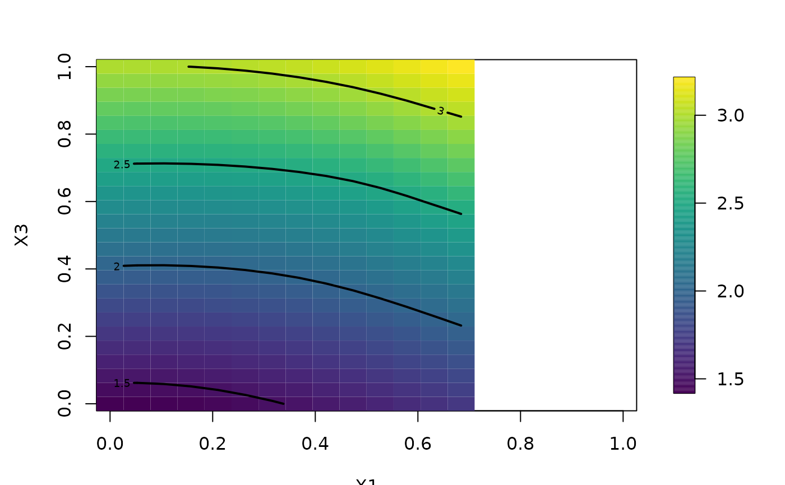
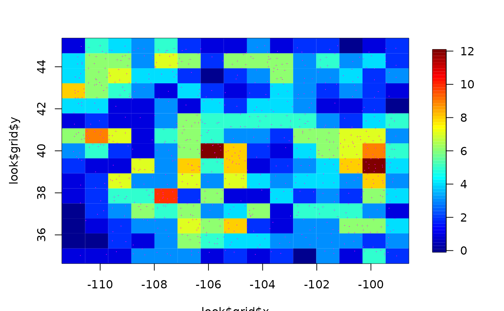

grid.list.RdThe object grid.list refers to a list that contains
information for evaluating a function on a 2-dimensional
grid of points. If a function has more than two
independent variables then one also needs to specify the
constant levels for the variables that are not being
varied. This format is used in several places in fields
for functions that evaluate function estimates and plot
surfaces. These functions provide some default conversions
among information and the gird.list. The function
discretize.image is a useful tool for "registering"
irregular 2-d points to a grid.
makeMultiIndex(M)
parse.grid.list( grid.list, order.variables="xy")
fields.x.to.grid(x,nx=80, ny=80, xy=c(1,2))
fields.convert.grid( midpoint.grid )
discretize.image(x, m = 64, n = 64, grid = NULL,
expand = c(1 + 1e-08, 1 + 1e-08),
boundary.grid = FALSE, na.rm = TRUE)
make.surface.grid( grid.list)
unrollZGrid( grid.list, ZGrid)An vector of integers.
No surprises here -- a grid list! These can be unequally spaced.
If "xy" the x variable will be subsequently plotted as the horizontal variable. If "yx" the x variable will be on the vertical axis.
A matrix of independent variables such as the locations of observations given to Krig.
Number of grid points for x variable.
Number of grid points for y variable.
Number of grid points for x variable.
Number of grid points for y variable.
Remove missing values if TRUE
The column positions that locate the x and y variables for the grid.
A grid list!
A scalar or two column vector that will expand the grid beyond the range of the observations.
Grid midpoints to convert to grid boundaries.
If TRUE interpret grid points as boundaries of grid boxes. If FALSE interpret as the midpoints of the boxes.
An array or list form of covariates to use for
prediction. This must match the
grid.list argument. e.g. ZGrid and grid.list describe the same
grid.
If ZGrid is an array then the first two indices are the x and y
locations in the
grid. The third index, if present, indexes the covariates. e.g. For
evaluation on
a 10X15 grid and with 2 covariates. dim( ZGrid) == c(10,15, 2).
If ZGrid is a list then the components x and y shold match those of
grid.list and
the z component follows the shape described above for the no list
case.
makeMultiIndex creates an expanded set of indices to referencce a
regular grid. M are L integers with product prodM
Will create a prodM by L matrix that is all combinations of (1:M[i]) for i =1,2, ...L
This is organized in the standard array ordering where the first
column varies the fastest for M = c( 3,2,4) the result will be a 24X3 matrix
with the entries:
1,1,1
2,1,1
3,1,1
1,2,1
2,2,1
3,2,1
etc ...
...
and ending with
2,2,4
3,2,4
All about grid lists:
The form of a grid.list is
list( var.name1= what1 , var.name2=what2 , ... var.nameN=what3)
Here var.names are the names of the independent variables. The what options describe what should be done with this variable when generating the grid. These should either an increasing sequence of points or a single vaules. Obviously there should be only be two variables with sequences to define a grid for a surface.
Most of time the gridding sequences are equally
spaced and are easily generated using the seq function. Also throughout fields
the grid points are typically the midpoints of the grid rather the grid box
boundaries. However, these functions can handle unequally spaced grids and the
logical boundary.grid can indicate a grid being the box boundaries.
The variables in the list components are assumed to be in the same order as they appear in the data matrix.
A useful function that expands the grid from the grid.list description into
a full set of locations is make.surface.grid and is
just a wrapper around the R base function expand.grid. A typical operation is to go from a grid.list to the set of grid locations. Evaluate a
fucntion at these lcoations and then reformat this as an image for plotting.
Here is how to do this cleanly:
grid.list<- list( x= 1:10, y=1:15)
xg<- make.surface.grid(grid.list)
# look at a surface dependin on xg locations
z<- xg[,1] + 2*xg[,2]
out<- list( x=grid.list$x, y= grid.list$y, z=matrix( z, nrow=10, ncol=15))
# now for example
image.plot( out)The key here is that xg and matrix both organize the grid in the
same order.
Some fields internal functions that support interpreting grid list format are:
fields.x.to.grid:
Takes an "x" matrix of locations or independent variables and creates a
reasonable grid list. This is used to evaluate predicted surfaces when a
grid list is not explicited given to predictSurface. The variables
(i.e. columns of x) that are not part of the grid are set to the median
values. The x grid values are nx equally spaced points in the
range x[, xy[1]]. The y grid values are ny equally spaced
points in the range x[, xy[2]].
parse.grid.list:
Takes a grid list and returns the information in a more expanded list
form that is easy to use. This is used, for example, by predictSurface
to figure out what to do!
fields.convert.grid:
Takes a vector of n values assumed to be midpoints of a grid and
returns the n+1 boundaries. See how this is used in discretize.image
with the cut function. This function will handle unequally spaced
grid values.
discretize.image: Takes a vector of locations and a 2-d grid and
figures out to which boxes they belong. The output matrix ind has the
grid locations. If boundary.grid is FALSE then the grid list (grid) is
assumed to be grid midpoints. The grid boundaries are taken to be the
point half way between these midpoints. The first and last boundaries
points are determined by extrapolating so that the first and last box
has the midpoint in its center. (See the code in fields.convert.grid for
details.) If grid is NULL then midpoints are found from m and n and the
range of the x matrix.
unrollZGrid Checks that the ZGrid object is compatible with th e grid.list and concatenates the grid arrays into vectors. This version of the covariates are used the usual predict function.
as.surface, predictSurface, plot.surface, surface, expand.grid, as.image
#Given below are some examples of grid.list objects and the results
#when they are used with make.surface.grid. Note that
#make.surface.grid returns a matrix that retains the grid.list
#information as an attribute.
grid.l<- list( 1:3, 2:5)
make.surface.grid(grid.l)
#> [,1] [,2]
#> [1,] 1 2
#> [2,] 2 2
#> [3,] 3 2
#> [4,] 1 3
#> [5,] 2 3
#> [6,] 3 3
#> [7,] 1 4
#> [8,] 2 4
#> [9,] 3 4
#> [10,] 1 5
#> [11,] 2 5
#> [12,] 3 5
#> attr(,"grid.list")
#> attr(,"grid.list")[[1]]
#> [1] 1 2 3
#>
#> attr(,"grid.list")[[2]]
#> [1] 2 3 4 5
#>
grid.l <- list( 1:3, 10, 1:3)
make.surface.grid(grid.l)
#> [,1] [,2] [,3]
#> [1,] 1 10 1
#> [2,] 2 10 1
#> [3,] 3 10 1
#> [4,] 1 10 2
#> [5,] 2 10 2
#> [6,] 3 10 2
#> [7,] 1 10 3
#> [8,] 2 10 3
#> [9,] 3 10 3
#> attr(,"grid.list")
#> attr(,"grid.list")[[1]]
#> [1] 1 2 3
#>
#> attr(,"grid.list")[[2]]
#> [1] 10
#>
#> attr(,"grid.list")[[3]]
#> [1] 1 2 3
#>
#The next example shows how the grid.list can be used to
#control surface plotting and evaluation of an estimated function.
# first create a test function
set.seed( 124)
X<- 2*cbind( runif(30), runif(30), runif(30)) -1
dimnames( X)<- list(NULL, c("X1","X2","X3"))
y<- X[,1]**2 + X[,2]**2 + exp(X[,3])
# fit an interpolating thin plate spline
out<- Tps( X,y)
#> Warning:
#> Grid searches over lambda (nugget and sill variances) with minima at the endpoints:
#> (GCV) Generalized Cross-Validation
#> minimum at right endpoint lambda = 0.0005215037 (eff. df= 28.49999 )
grid.l<- list( X1= seq( 0,1,,20), X2=.5, X3=seq(0,1,,25))
surface( out, grid.list=grid.l)

# surface plot based on a 20X25 grid in X1 an X3
# over the square [0,2] and [0,2]
# holding X2 equal to 1.0.
#
# test of discretize to make sure points on boundaries are counted right
set.seed(123)
x<- matrix( runif(200), 100,2)
look<- discretize.image( x, m=2,n=2)
xc<- seq(min(x[,1]), max(x[,1]),,5)
xc<- xc[2:4]
yc<- seq(min(x[,2]), max(x[,2]),,5)
yc<- yc[2:4]
grid <- list( x= xc, y= yc)
look2<- discretize.image( x, m=2,n=2)
table( look$index )
#> index2
#> index1 1 2
#> 1 25 28
#> 2 25 22
table( look2$index )
#> index2
#> index1 1 2
#> 1 25 28
#> 2 25 22
# indicator image of discretized locations
look<- discretize.image( RMprecip$x, m=15, n=15)
image.plot( look$grid$x, look$grid$y,look$hist )
# actual locations
points( RMprecip$x,col="magenta", pch=".")
